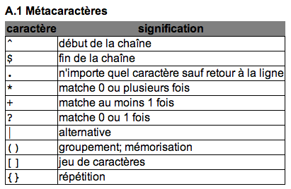
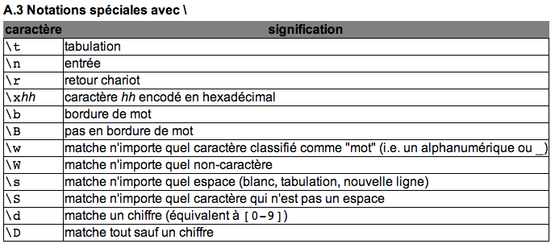
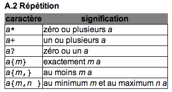
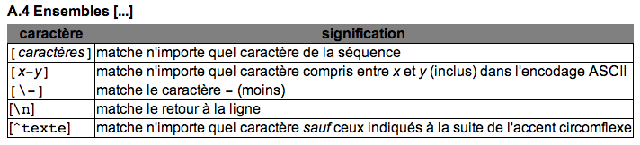

Deux techniques majeures :
» Gros volume de données, mais pas de structuration
» Volume de données plus faible, mais très structuré
Cas d'utilisation : Moteurs de recherche (Google), analyse de liens entrants/sortants,...
Cas d'utilisation : Récupération de données ciblées et structurées (voir http://resultats.lesprimairescitoyennes.fr/)
Expressions rationnelles (régulières) (regex)
On extrait le code source de la page, puis on applique des motifs d'extraction dessus, comme s'il s'agissait de texte brut.
XPath
On extrait le code source de la page, on le normalise en un flux XML valide, puis on applique des expressions d'extraction sur le DOM.
|  |  |
|  |  |
<?xml version="1.0"?>
<racine>
<encyclopedie nom="Wikipedia" site="http://fr.wikipedia.org/">
<article nom="XPath">
<auteurs>
<auteur>
<nom>Dupont</nom>
</auteur>
<auteur>
<nom>Dubois</nom>
</auteur>
</auteurs>
</article>
</encyclopedie>
</racine>
//article |
Sélectionne les éléments "article" |
/racine/encyclopedie |
Sélectionne les éléments "encyclopedie" qui sont fils d'éléments "racine" |
//article[@nom='XPath'] |
Sélectionne les éléments "article" dont l'attribut "nom" vaut "XPath" |
//article[1]/auteurs/auteur[2] |
Sélectionne le second auteur (Dubois) du premier article |
Source : http://fr.wikipedia.org/wiki/XPath
Ressources et exemples disponibles sur github
Utiliser la classe ScrapingIOUtils qui permet de récupérer le contenu d'une page web sous forme d'une String ou sous forme d'un InputStream.
Cette classe gère instinctivement les problèmes d'encodage, de compression des réponses, etc...
URL url = new URL("http://www.data-publica.com");
String html = ScrapingIOUtils.getResourceAsString(url);
try(InputStream stream = ScrapingIOUtils.getResourceAsStream(url)) {
// Do something with streamed data
}
Utiliser les classes du package java.util.regex (jdk).
Normaliser le texte extrait (suppression des entités html) avec la classe StringEscapeUtils (Projet Apache).
Pattern links = Pattern.compile("<a.+href=\"(.+?)\".*>(.+?)</a>");
Matcher m = links.matcher(html);
while(m.find()) {
String href = StringEscapeUtils.unescapeHtml(m.group(1));
String text = StringEscapeUtils.unescapeHtml(m.group(2));
System.out.println(text + " > " + href);
}
Offre > http://www.data-publica.com/content/offer
Société > http://www.data-publica.com/content/
...
Utiliser la classe XPathUtils qui contient les méthodes :
getDocumentHTML : construit DOM valide à partir d'un flux HTMLgetDocumentXML : parse un flux XML et retourne le DOM correspondantgetNodes : retourne une liste de noeuds du DOM extraits grâce à une expression xpathgetString : retourne une chaîne de caractères grâce à une expression xpath ne renvoyant qu'un noeud texteunescape : normalise une chaîne de caractères (suppression des entités HTML et des espaces inutiles)
try(InputStream stream = ScrapingIOUtils.getResourceAsStream(url)) {
// Get a valid XML stream.
Document doc = XPathUtils.getDocumentHTML(stream, "UTF-8");
// Print page title
String title = XPathUtils.getString(doc, "//head/title/text()");
System.out.println(title);
// Get all links
NodeList nodes = XPathUtils.getNodes(doc, "//a[@href and text()]");
for(int i=0 ; i<nodes.getLength() ; i++) {
Node node = nodes.item(i);
Node attr = node.getAttributes().getNamedItem("href");
String href = XPathUtils.unescape(attr.getNodeValue());
String text = XPathUtils.unescape(node.getTextContent());
System.out.println(text + " > " + new URL(url, href));
}
}
Data Publica | Les données pour votre business
Offre > http://www.data-publica.com/content/offer
Société > http://www.data-publica.com/content/
clients > http://www.data-publica.com/content/clients
S'inscrire > http://www.data-publica.com/register
...
Web Harvest est un outil open-source d'extraction de données web.
Les scrapers se configurent via un fichier XML, et peuvent être étendus grâce au développement de plugins en Java.
Une GUI est également disponible (attention aux yeux).
<?xml version="1.0" encoding="UTF-8"?>
<config>
<var-def name="root">http://www.data-publica.com</var-def>
<loop item="href">
<list>
<xpath expression="//a/@href">
<html-to-xml>
<http url="${root}" />
</html-to-xml>
</xpath>
</list>
<body>
<var-def name="url">
<template>${sys.fullUrl(root, href)}</template>
</var-def>
<var-def name="title">
<xpath expression="//head/title/text()">
<html-to-xml>
<http url="${url}" />
</html-to-xml>
</xpath>
</var-def>
<file action="append" path="/Users/thomas/Desktop/scrapathon.output">
<template>${url} ${title} ${sys.lf}</template>
</file>
</body>
</loop>
</config>
Objectif
Constituer un annuaire des services ministériels Français.
http://lannuaire.service-public.fr/navigation/gouvernement.html